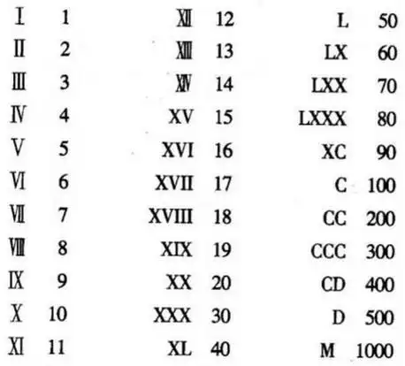

计算的历史
算筹学：计算的远古起源
让我们穿越回远古时代，思考一下如何进行计算。请暂时忘掉数字，四则运算，以及所有现代才有的东西。
那么咱们首先需要思考的是，如何表示数字？
中国的古人使用算筹表示数字，算筹是一种细长的竹签或木棍，每根算筹的位置和数量代表不同的数值。通过排列和移动这些算筹，可以进行加减乘除等基本运算。
图中可以直观的看出算筹是如何通过摆放位置来表示数字的。对于多位数字，则通过位置来表示进位。当然，没有算筹表示0.
可见算筹是一种基于木棍摆放方式表达数字的十进制表示法。
并且，由于这些木棍容易移动，算筹可以非常方便的表示数字的变化，也就是计算。
算筹的发明，标志着人类开始创造工具进行辅助计算。
从算筹的设计，我们可以看到计算的两大要素：表示数字和表示数字的变化。
在算筹里面，数字和表示是通过“设备”来实现的。数字的变化则是通过人的操作来实现。因此它是一种人机协同的计算设备。
特别要值得强调的是，算筹完全基于摆放的方式表达数字，要理解其意义，我们不妨看看其他文明的数字表示法。
古埃及文明采用象形文字表示数字。
古巴比伦文明采用楔形文字表示数字。
古玛雅文明采用象形文字表示数字。
最后欣赏一下古罗马数字。
不难看出，为了表示不同大小的数字，可以采用不同的笔画，不同的写法，或者不同的位置。但只有算筹表示法，完全基于位置。这意味着什么呢？
本质上，计算的过程，就是一个让数字发生变化的过程。所以，一个计算设备，其最基本的要素，是一个方便改变的表示数字的东西。
那么，笔画，写法和位置，哪个是方便改变的表示数字的东西呢？
显然，位置比笔画和写法，更方便改变。
可见，算筹的设计，从一开始，就是面向计算的需求的。相比之下，其他文明的表示法，则更多的面向记录的需求。因为不同的笔画和写法，单就阅读数字而言，具有优势。
值得一提的是，现代计算机最核心的部分，表示数字的东西，叫做寄存器。一个寄存器是有不同位置上表示0和1的比特组成。这些比特非常容易改变。
算筹和寄存器，有着异曲同工之妙。为什么呢？因为任何计算设备，最核心的要素，是用最方便的方式表示数字的改变。
基础元素要简单，统一，并且容易操作。通过基础元素的组合，表达复杂多变的信息。
这些基本原则，贯穿了整个计算设备的发展历程。
算盘
算盘是算筹的升级版。算筹的摆放位置，需要人手动操作，不仅容易出错，也不容易提高速度，而算盘上的算珠的摆放位置，则可以通过算珠的移动来实现。 操作者只需要一些简单重复的动作，即可准确的移动算珠，实现计算过程。极大的提高了计算速度，降低了出错率。
操作算盘的方法，叫做珠算口诀。
珠算口诀，把计算映射成操作算盘的动作。它在抽象的数学运算，和一种机械设备的动作之间，建立了一种映射关系。
因此，珠算可以看做一种由人类操作的半自动计算设备。从本质上说，是这个算盘进行计算，人类只是起到操作的作用。
算盘的出现，标志着人类的计算设备，从以人为主，向着以机器为主的转变。
整个计算设备的发展历程，就是一个提高自动化程度的过程。
本质上说，即便高度自动化的现代计算机，仍然是一个人机协同的计算设备，只不过人的操作变得非常少，而计算机承担了绝大部分的任务。 比如计算机程序虽然是计算机自动运行，但程序的编写仍然是人类主导。
机械计算机
机械计算机是计算设备向着自动化发展的重要步骤。
机械计算机，通过齿轮，杠杆等机械部件，实现了一些简单的计算任务。
机械计算机的原理比较复杂，我们就不详细展开了。特别值得一提的是，在机械向着机电发展的过程中，诞生了一个如雷贯耳的名字：图灵。
图灵在1936年提出了图灵机的概念，这是一种抽象的计算模型，可以看作是现代计算机的理论基础。
顺便一说，图灵是个英国人，年纪轻轻就英年早逝了。但他不是病死的，也不是被敌人杀害的， 而是因为英国佬认为图灵是个同性恋，逼迫他去化学阉割，最后他不堪忍受，自杀了。 这个悲惨的故事告诉我们，人才很宝贵，一个包容人才的社会环境，更宝贵。 图灵是计算机历史上最伟大的人物之一，但英国佬关心的，是他的性取向。
电子计算机与冯诺依曼架构
要实现一个高速的，高度自动化的，通用的电子计算设备，需要解决几个问题：
1. 如何使用电子元器件的状态表示数字？
2. 如何使用电子元器件产生数字的变化？
3. 如何储存程序，即数字变化的方式？
在现代的主流的电子计算机中，使用电子元器件的两种状态对应1和0，即二进制。因为元器件的具体不同，可能是通断，电压高低，磁性有无，等等
现代计算机中的状态变化，则是通过三极管实现，特定的条件，可以实现数字的反相，或者保持不变。
如果我们使用另一个数据，控制三极管产生反相或者保持不变，那么我们就实现了数字变化的方式的储存，也就是程序。
这里我们可以看到一个非常关键的概念：程序即数据。
程序是数据，数据也是程序。
程序和数据，在现代计算机中，都是以二进制的方式存在。
这种思想，不仅指导了现代计算机的设计，后面大家也会看到，这也是我们的慧码编程语言的核心指导思想。
现代高级编程语言的发展
在电子计算机的“上古时代”，人们曾经使用穿孔卡片进行编程。
这些能够使用穿孔卡片的上古大能，我们只能说一句：大佬，大佬。
之后，出现了汇编语言，这是一种用助记符表示的编程语言，每一条汇编指令，都对应一条机器指令。 有了这些助记符，就可以“方便”的编程了。具体有多方便呢？各位感受一段汇编语言代码：
MOV A, 1
MOV B, 2
ADD B, A
比穿孔卡片比，那真是方便多了。
不过，若是就这样，我等凡俗也就跟“编程”二字无缘了。幸好，随着计算机的发展，出现了高级编程语言。
高级语言，有两个特别值得注意的流派：
1. 命令式编程语言：强调如何通过一系列的命令来实现计算。
2. 声明式编程语言：强调要做什么，而不是如何做。
举个例子，假设我们想让计算机做一个阶乘运算，比如说，5的阶乘，就是 1*2*3*4*5
命令式编程语言，侧重点是，如何一步一步的运算，来实现阶乘。
具体来说就是，告诉计算机，你从1开始，依次乘以2，3，4，5，直到5，然后把结果告诉我。至于这阶乘是什么意思，计算机不必了解。
声明式编程语言，侧重点是，要做什么，而不是如何做。
具体来说就是，告诉计算机，阶乘如何定义。那么想想看，5的阶乘是啥意思？是5乘以4的阶乘，4的阶乘又是啥意思？是4乘以3的阶乘，依次类推。
直到1的阶乘，那它又是啥意思？它就是1.
一般的，对于任何数字n，n的阶乘就是n乘以n-1的阶乘。而1的阶乘，就是1。
如此，我们就定义了阶乘。根据这个阶乘的定义，任何数字的阶乘，都可以通过这个定义，从更小的数字的阶乘计算得到。直到1的阶乘，就是1。
用这种方式编程，我们并没有直接告诉计算机怎么计算，而是告诉计算机，我们要计算的东西，是什么定义。
计算机要做的，就是根据这个定义，一步一步的计算。
所以，声明式编程语言，是编程语言的发展方向。我们的慧码编程语言，就是一种声明式编程语言。
你想不想了解更多呢？
总结
回顾计算方法的历史，我们可以看到人类对智能化计算机器的追求从未停止。从算筹到现代计算机，每一次技术的进步都推动了社会的发展。 而编程语言的发展，则是现代计算设备发展的缩影。
最后，咱们说一说中文和编程。
客观上说，英文是计算机世界使用最广泛的文字。不懂英文，学习计算机编程，会处处碰壁。
但是中文也是世界上使用人数最多的文字之一。我们不禁要问，中文编程，有可能吗？
答案是，有可能。
慧码编程语言，就是一种面向中文使用者的编程语言。
我们的愿景是，让英文不再成为学习编程的障碍。
今天，慧码编程语言还不成熟，但是请关注我们的发展。